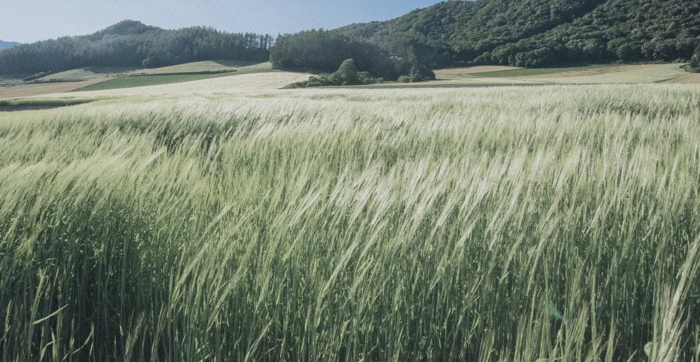
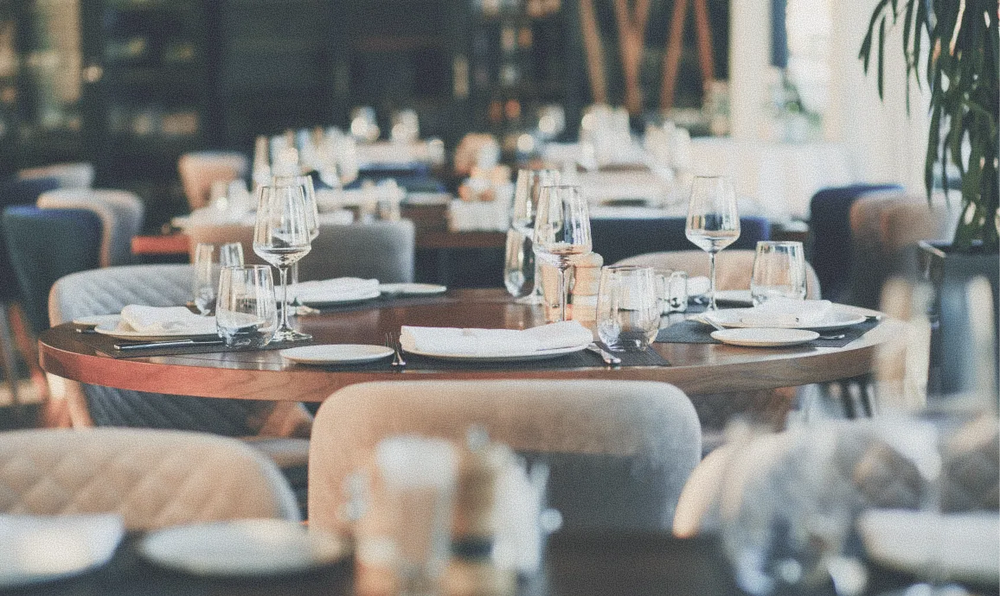
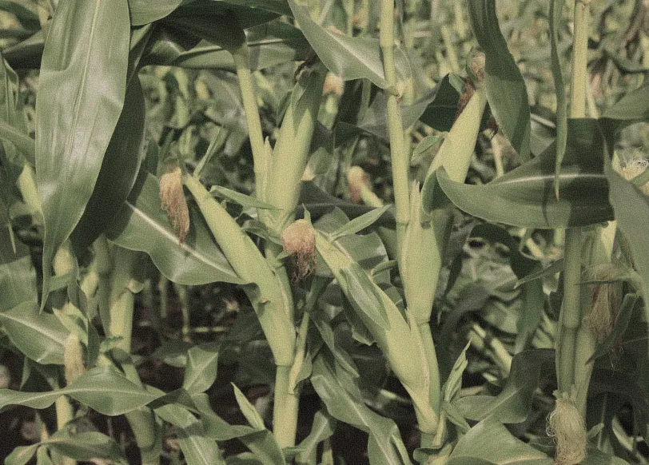
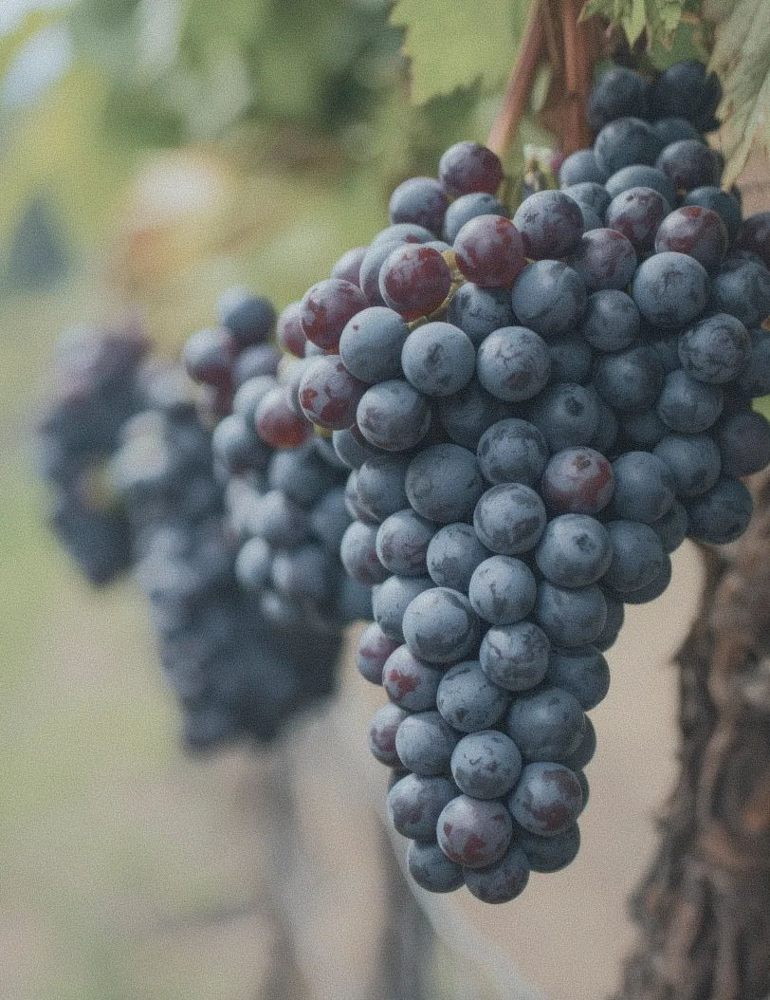
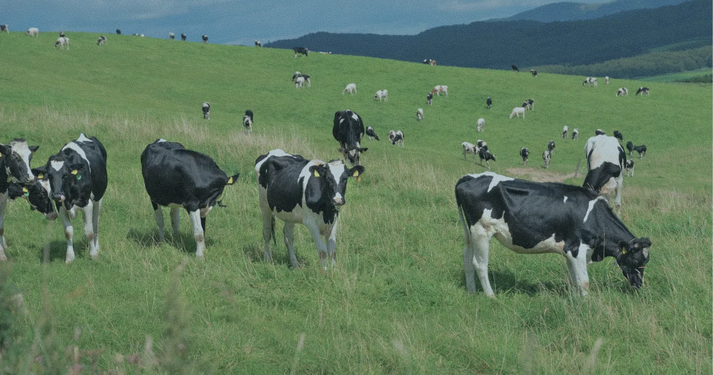
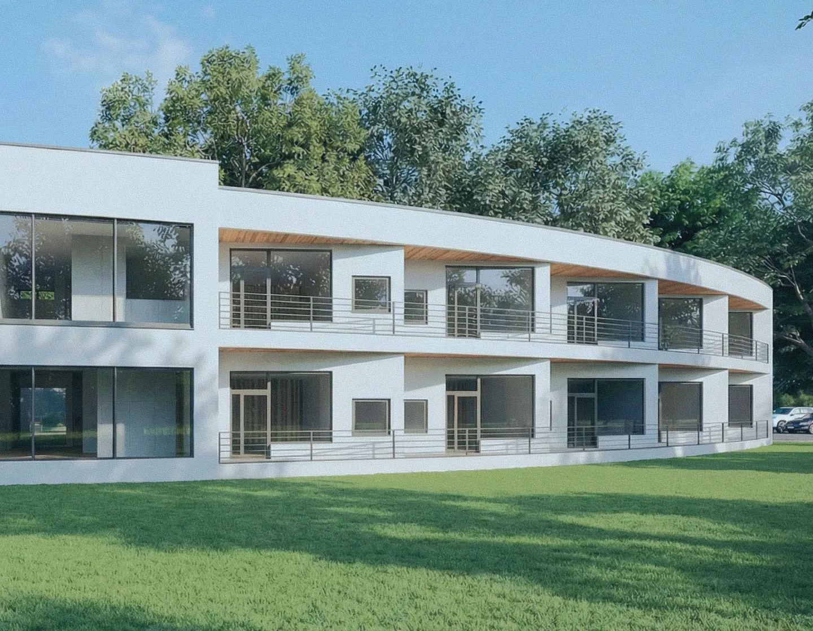
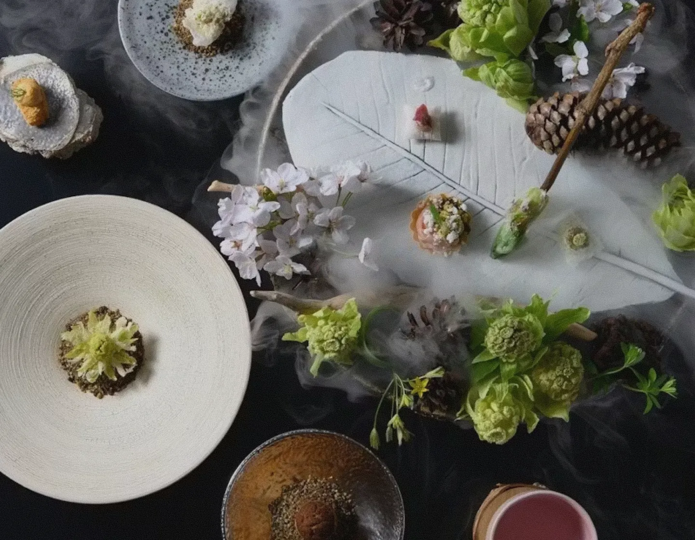

お知らせ
（仮）6/1 オープン告知
お知らせの詳細が入ります。お知らせの詳細が入ります。お知らせの詳細が入ります。
JAL Auberge FURANO オープン
2026.12 JAL Auberge
FURANO オープン
J A L が 誘 う 、 日 本 の 新 し い 「 食 」 と 「 宿 」 。
そ
の
土
地
を
味
わ
う
た
め
に
、
旅
を
す
る
。


地域の食と風土を味わうための場所。それがJALオーベルジュです。その土地の食材を、その土地にゆかりのある料理人が調理し、その土地の景色の中で味わう。料理人も、運営者も、できる限り地元から。だからこそ、ここでしか出会えない味があり、ここでしか感じられない時間があります。一皿に込めるのは、どこにでもある味ではなく、その土地だけが持つ物語。食と体験を旅の主役に据えた、上質な滞在型観光の拠点として、JALオーベルジュは日本各地に広がっていきます。

大都市にはなかなか届かない、小さな生産者の恵みがあります。その時期にしか出会えない、地域だけに伝わるわずかな旬があります。その土地で丁寧に育てられたものを、その土地で味わっていただきたい。当たり前でありながら、これまでなかなか実現できなかったことを、JALオーベルジュは丁寧に行っていきます。JALオーベルジュのシェフは「食の記憶」を大切に考えています。その土地にしかない気候特性、年ごとに異なる収穫の頃合い。メニューの一行では、到底伝えきれないものが料理の奥底に宿っています。味わうたびに、その土地のことが分かってくる。料理は、風土を理解するための、最もおいしい言語です。


JALオーベルジュは、「宿泊施設付きのレストラン」です。ホテルにレストランがある、ではなく、ぜひともご堪能いただきたい料理があって、その料理を目的に訪れていただき、泊まれる場所がそこにある。それがJALオーベルジュの本質です。食後は、余韻を抱えたまま客室へ。夜空を眺めながら、今宵の料理の記憶をゆっくりと手繰り寄せるひととき。翌朝は、その土地ならではの空気と眺望で目覚め、その季節にしか出会えない朝食を迎える。一泊の時間をかけて、少しずつ、土地土地の深いところへと入っていく。「また、あの料理を食べたい。」その気持ちが生まれたとき、次の旅はもう始まっています。


北海道のへそ、中富良野。十勝岳連峰を望む北星山の森に生まれるオーベルジュです。
主役は、山の野生の食材と、この土地で育った和牛。
ここでしか出会えない旬を、富良野を知り尽くしたシェフが一皿に込めます。
言葉ではなく、味覚で伝わる富良野がここにあります。2026年12月グランドオープン。
※現在開業準備中のため、施設名での
Googleマップ表示は順次反映予定です。